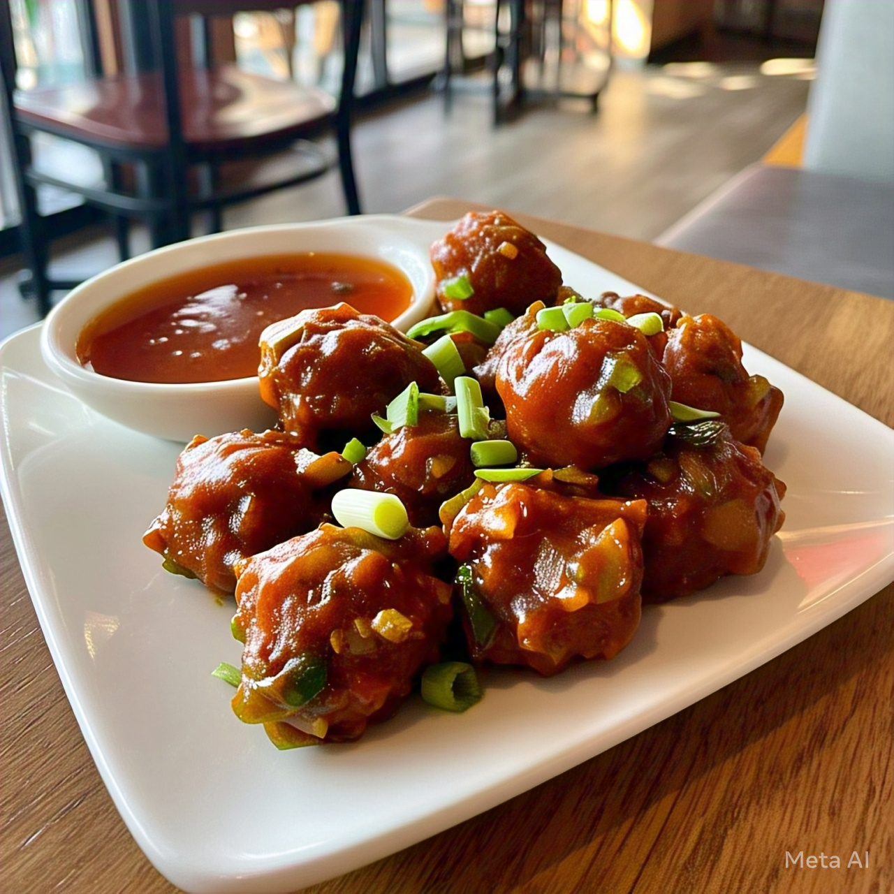

Home
Veg Manchurian

Description
Veg Manchurian is a beloved Indo-Chinese dish made with deep-fried vegetable balls tossed in a tangy, spicy, and slightly sweet sauce. The dry version is great as a starter or side dish with noodles and fried rice.
Ingredients
-For Veg Balls
- 1 cup grated cabbage
- 1/2 cup grated carrot
- 1/4 cup chopped capsicum
- 1/4 cup chopped spring onions
- 2 tbsp cornflour
- 2 tbsp all-purpose flour
- Salt and pepper to tase
-For the Sauce
- 1 tbsp oil
- 1 tbsp chopped garlic
- 1 tbsp chopped ginger
- 2 green chillies, chopped
- 1/4 cup chopped onions
- 1/4 cup chopped capsicum
- 1 tbsp soy sauce
- 1 tsp vinegar
- 1 tsp chili sauce
- 1 tsp tomato ketchup
- Salt and pepper to taste
- Spring onion greens for garnish
Steps
- Mix all chopped vegetables with cornflour, maida, salt, and pepper. Shape into small balls.
Deep fry on medium heat until golden and crisp. Drain and set aside.
- In a pan, heat 1 tbsp oil. Sauté garlic, ginger, and green chilies for a few seconds.
Add chopped onions and capsicum. Stir-fry on high for 1-2 minutes.
- Add soy sauce, chili sauce, vinegar, and ketchup. Mix well.
Season with salt and pepper.
- Add the fried veg balls to the pan. Toss well so they are coated with the sauce.
- Garnish with spring onions and serve hot with noodles or fried rice.